|
NEC
- Roda JC (1-1) 18 augustus 2007
|
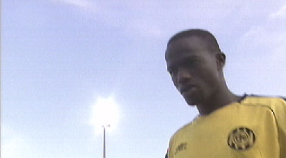
Lamah betreedt het speelveld.
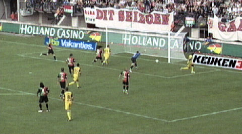
Tien minuten later ziet hij zijn doelpunt afgekeurd worden wegens buitenspel.
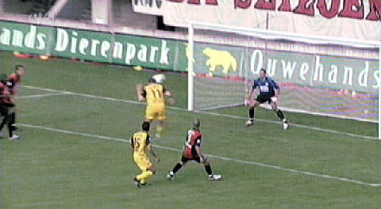
Na prachtig voorbereidend werk van Lamah krijgt Oper deze uitstekende kopkans.
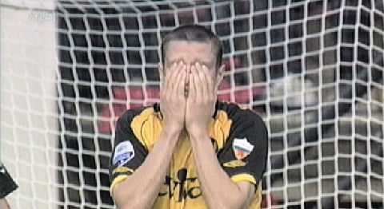
Helaas...
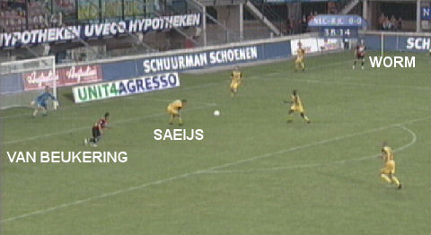
Worm werkt de bal in de zestien. Saeijs verstapt zich waardoor de bal bij
Van Beukering komt.
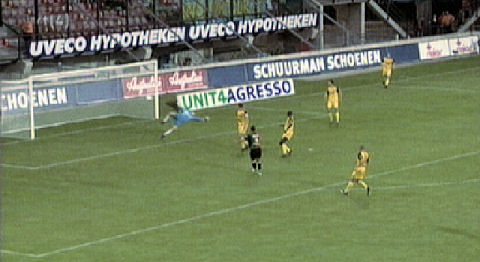
Deze schiet vanuit de draai 1-0 achter Castro, (39').
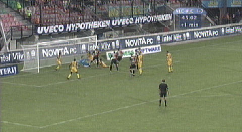
In de extra tijd van de eerste helft ontstaat er een enorme scrimmage voor het
doel
van Roda. Door onder meer een goede reflex van Castro wordt een nieuwe tegen-
treffer vermeden.
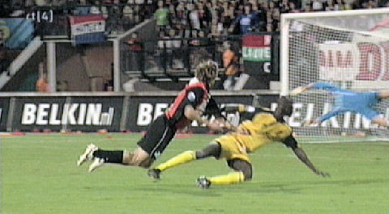
De voor Van Beukering ingekomen Prent scoort bijna met een fantastisch genomen
volley. 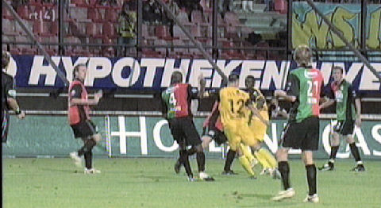
Schot van De Fauw belandt op de paal.
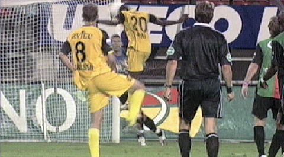
Lamah reageert attent door de teruggesprongen bal in te koppen: 1-1, (85').
Na één wedstrijd al publiekslieveling!
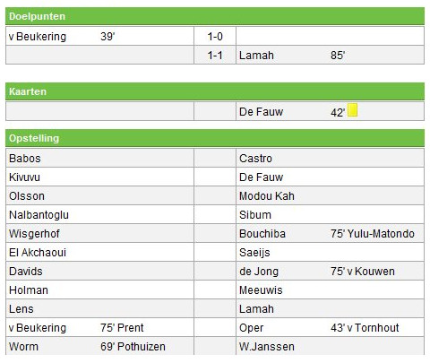
© Koempels Pleasure Dome
|